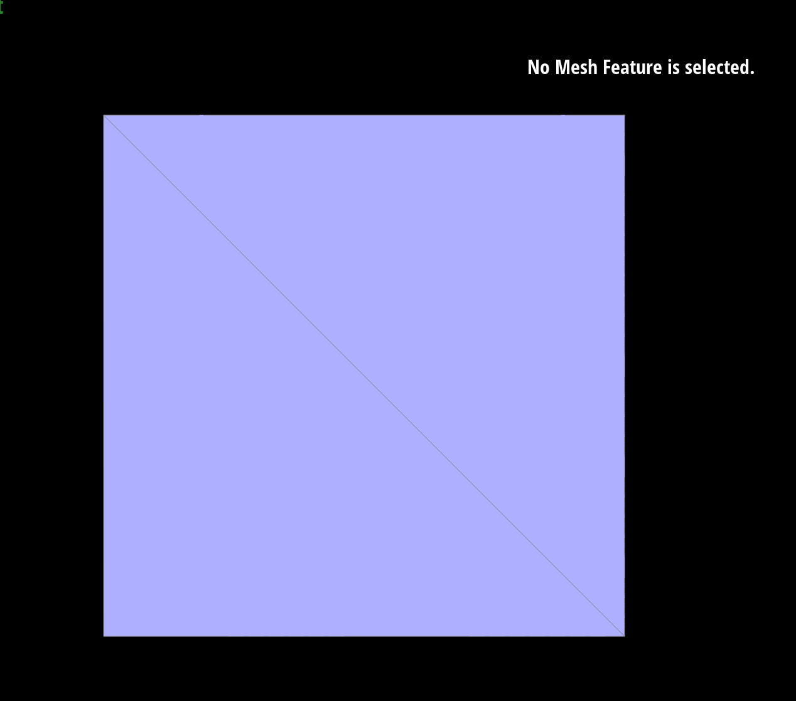
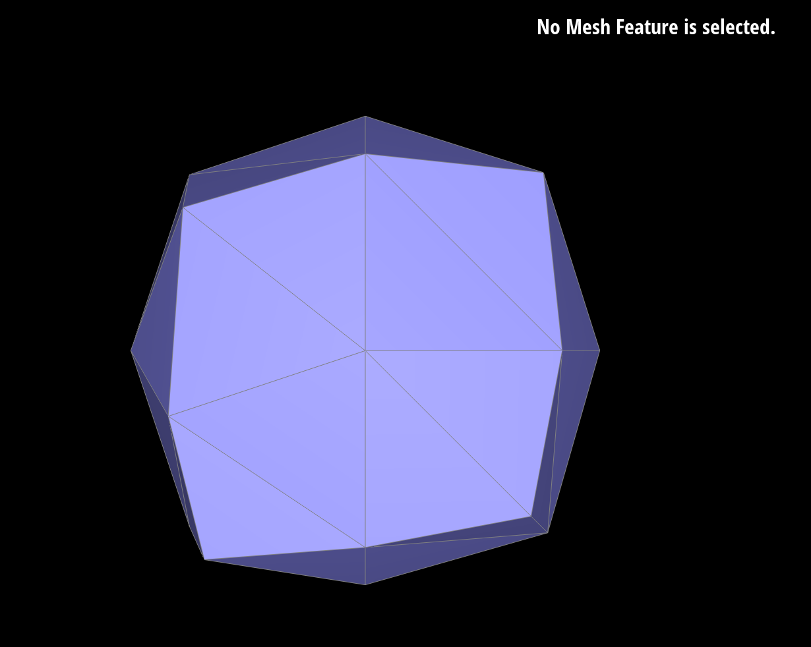
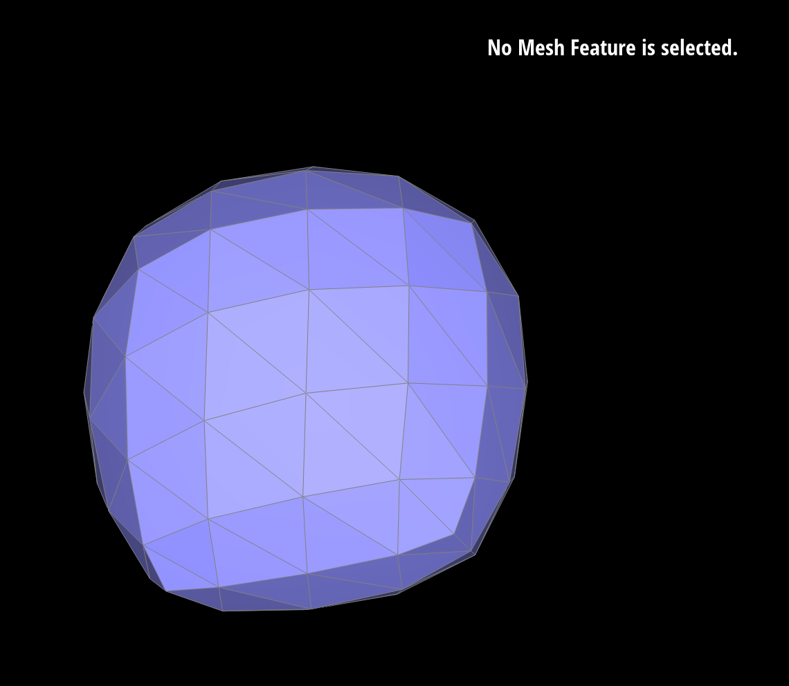
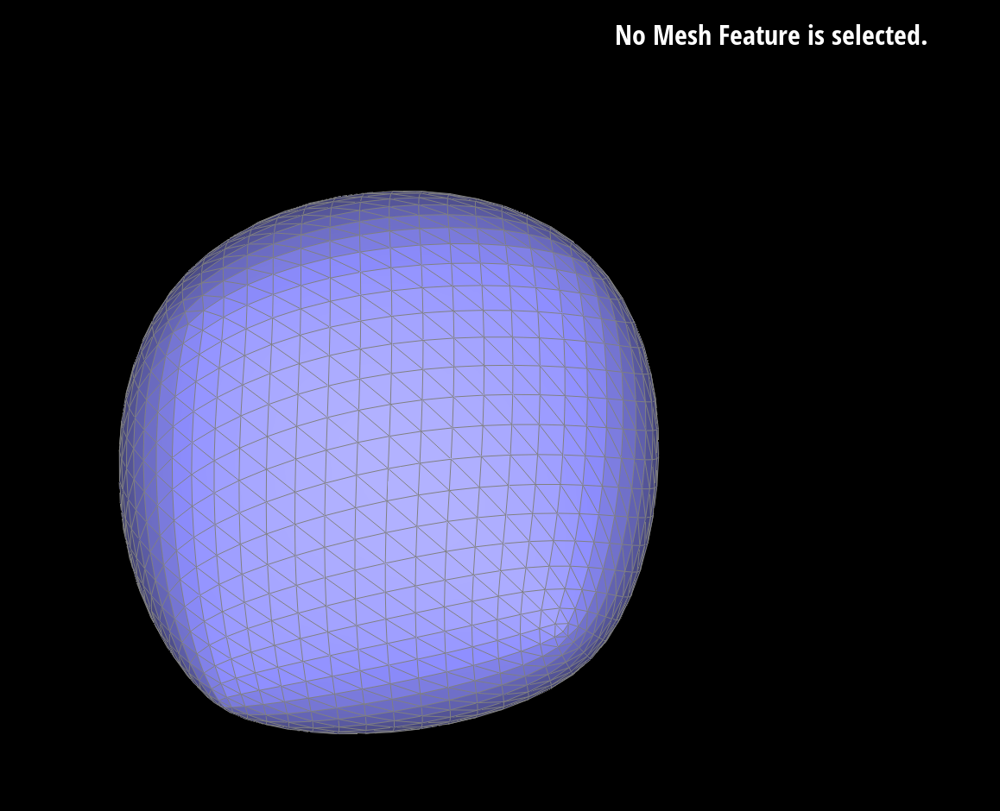

First, all vertices in the original mesh were iterated through and their new positions were computed using the loop subdivision weighting rule based on vertex degree. The results were stored in Vertex::newPosition while maintaining the original positions.
\[ \beta = \begin{cases} \frac{3}{16} & \text{if } n = 3 \\ \frac{3}{8n} & \text{if } n > 3 \end{cases} \]
Next, the loop edge rule was used to compute new edge midpoints and the new positions were
stored in Edge::newPosition. After doing so, every edge from the original mesh was split
by inserting a new midpoint vertex whose position was just computed.
After splitting edges, the “new” edges that connect one old vertex and one newly created midpoint
vertex were identified and flipped. This is done by setting “isNew” flags on vertices and
edges in order to distinguish between original elements and those created during subdivision.
Lastly, all vertex positions were updated by copying newPosition into position.
Since the upsample() method heavily relies on the previously implemented methods of flipEdge()
and splitEdge(), it was important to ensure that those methods were working properly before
approaching the upsample() implementation to ensure that bugs could be isolated to this method only.
It was also important to ensure that “isNew” flags were properly set for each newly inserted midpoint
vertex to ensure that only edges that were connecting new edges and old edges were being flipped.
Initially, the flags were not being set correctly, causing some unintended edges to be flipped and
resulting in a highly asymmetrical and unexpected shape after performing loop subdivision.
Sharp corners and edges are rounded more quickly since the loop division is averaging neighboring positions which causes corners to seem smoother. Pre-splitting does reduce the smoothing effects since it adds more vertices near the feature, making the smoothing become distributed across a larger amount of smaller edges. It also creates shorter edge lengths, which makes the rounding effect appear less prominent.
The cube becomes smoother and its sharp edges round out with more iterations of the night routine.
Loop subdivision updates vertex positions by using the weighted averages of neighboring vertices,
which bring the vertices inward, thus smoothing sharp features. The cube thus becomes more rounded
with more iterations of the subdivision.
Yes. The cube can be pre-processed by flipping edges so that the diagonals of each square face
follow a consistent, symmetric pattern. Inconsistent starting triangulation can result in
asymmetry that becomes more noticeable with more subdivisions. Making the triangulation uniform
from the start helps result in a more symmetric cube.



